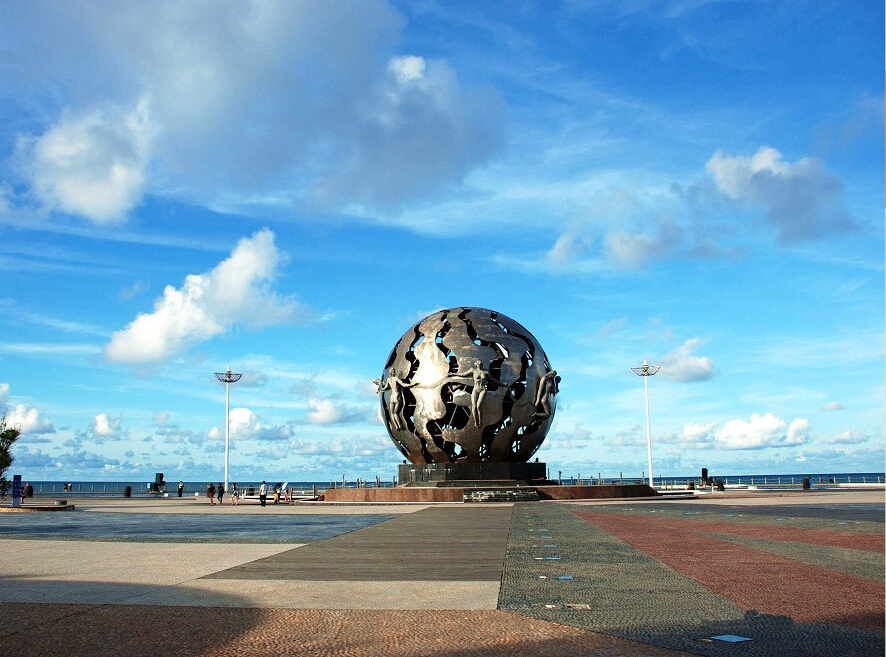
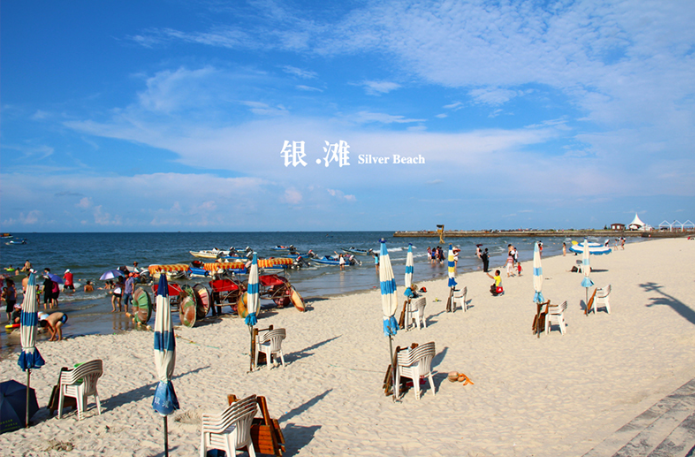
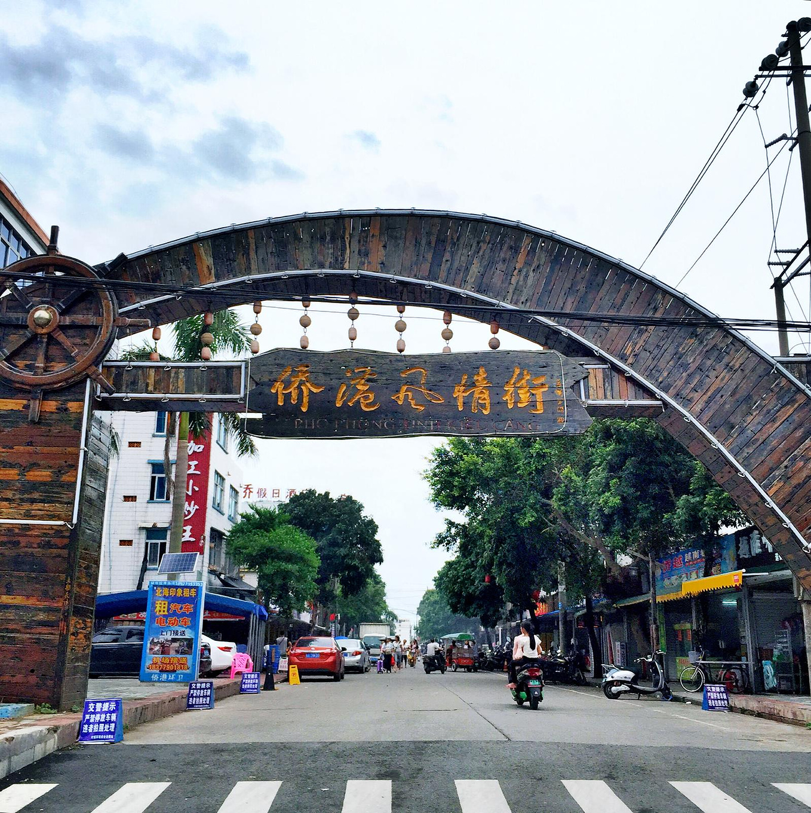
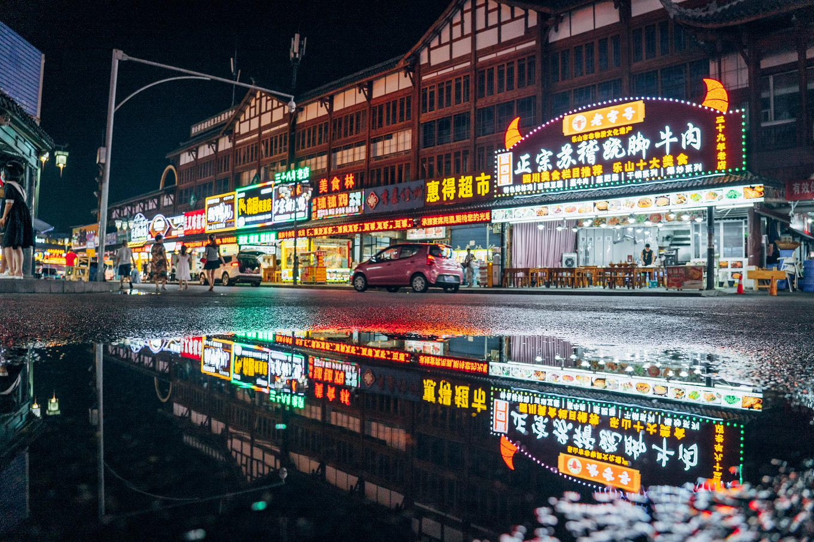
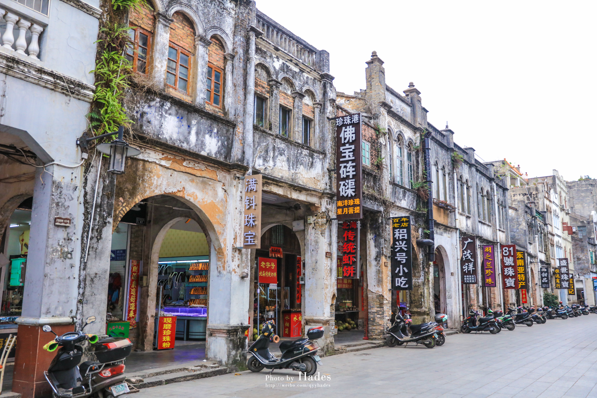
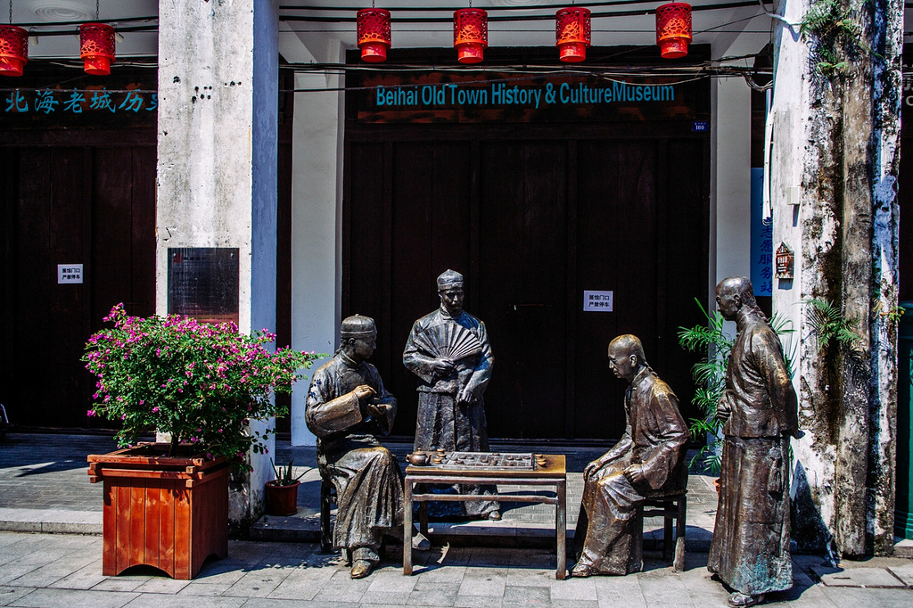

在中国大陆的最南边，有那么一座小城，三面临海，用她最温柔的姿态，带着她的子民拥抱大海，在大海的馈赠之下享受着最惬意的生活。
她就是坐落于广西壮族自治区的北海市。

北海都有哪些好地方呢？
1.银滩
银滩是北海市的标志性景点之一，这里的沙子洁白如雪，在阳光的照耀下变得银装素裹，显得大海更加地蓝，海水更加澄净透彻。

2.侨港风情街
北海侨港风情街是北海一条人气比较旺的特色小吃街，以北海、越南风味的特色小吃为主。每当夜幕降临，从市区及外地过来的车辆便开始源源不断地涌进侨港，品尝当地特色的海鲜。侨港风情街越南华侨很多，所以有着各种各样的美食，主打越南风味，像鸡丝粉、蟹仔粉和卷筒粉等。


3.老街
北海老街——珠海路是一条有近二百年历史的老街，始建于1821年，初建时称为升平街，只有200米长，4米宽。随着各历史时期的不断发展，现已成为长1.44公里，宽9米，沿街全是中西合璧骑楼式建筑的商业老街。
这些建筑大多为二至三层，主要受19世纪末叶英、法、德等国在我市建造的领事馆等西方卷柱式建筑的影响，临街两边墙面的窗顶多为卷拱结构，卷拱外沿及窗柱顶端都有雕饰线，线条流畅、工艺精美。临街墙面部不同式样的装饰和浮雕形成了南北两组空中雕塑长廊。这些建筑临街的骑楼部分，既是道路向两侧的扩展又是铺面向外部的延伸，人们行走在骑楼下，既可遮风挡雨又可躲避烈日；骑楼的方形柱子粗重厚大，颇有古罗马建筑的风格。
 